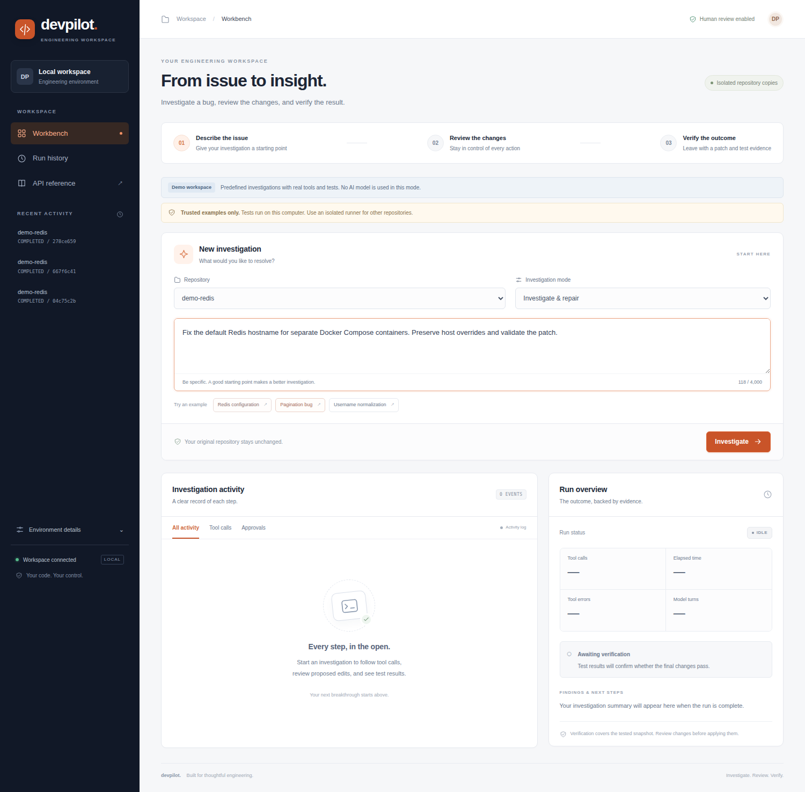

01 · Start here: understand the project in one conversation
The simplest accurate description
DevPilot is a debugging workbench for small Python repositories. You describe a problem, the application investigates a disposable copy of the code, and you review proposed edits and test runs. At the end, you can download a patch, an explanation, and a record of what actually happened.
The word workbench matters. A workbench brings tools together while a person remains responsible for decisions. DevPilot is not a system that automatically fixes and deploys arbitrary production applications. Its central design is to connect investigation, approval, execution, and evidence.
Imagine a developer receives the report: “The service cannot find Redis when deployed with Docker Compose.” A chatbot might suggest changing a hostname. DevPilot gives the investigation an operational workflow: inspect the relevant file, reproduce the failure, propose an exact change, obtain approval, rerun tests, and export the change with evidence. The developer can then review and apply that patch through their normal development process.
Why build this instead of asking a chatbot?
A chatbot's explanation is text. Text can be plausible without being correct. It may refer to a file that does not exist, assume a test passed, or suggest a fix that changes unrelated behavior. DevPilot gives the model bounded access to actual repository tools and records their results independently of the model's explanation.
There are three questions to keep separate throughout this handbook:
- What did the model say? This is a proposed explanation or requested action.
- What did the application execute? This is an approved tool operation with recorded inputs and outputs.
- What does the evidence establish? This is a conclusion supported by exit codes, hashes, and recorded artifacts, with limitations.
This separation is the project's strongest interview story. It is more meaningful than listing many technologies without explaining how they contribute to a reliable workflow.
The two experiences you must not confuse
Scripted demo: DemoModel follows a predefined sequence and repair for one of three bundled examples. It still uses real tools, real approval gates, real edits, and real tests. It demonstrates integration, not AI intelligence.
Live model: OpenAIModel sends the conversation and tool definitions to a configured model endpoint. The model decides what to inspect and which change to request. That introduces real uncertainty: latency, invalid calls, incomplete explanations, and incorrect repairs are possible.
The adapter is called OpenAIModel because it uses an OpenAI-compatible HTTP format. The repository's intended local model paths use Qwen through Ollama or vLLM. The demo does not need a paid model API or downloaded weights.
A short interview introduction
“DevPilot is a single-operator debugging workbench. It combines a local model interface, MCP tools, approval-gated edits and tests, disposable repository snapshots, and independently recorded test verification. The default demo is scripted, while live inference uses an OpenAI-compatible adapter. It also includes container, Kubernetes, delivery, and observability configurations for operating the same application.”
That is an accurate project description, not a claim about who authored every file. When discussing your contribution, identify the parts you actually implemented, reviewed, modified, or tested. Do not claim production users, live-model success rates, or cluster deployments that you cannot demonstrate.
How to study this handbook
Read Chapters 1–6 to understand the problem and the complete workflow. Chapters 7–18 explain the implementation. Chapters 19–25 explain deployment and operations. The later chapters provide source maps, troubleshooting, interview answers, and a practice plan. You do not need to memorize every setting on the first pass. First learn the path a request follows and the boundary each component enforces.
This handbook describes version 0.3.0 plus the local UI and cache-policy changes reviewed on 21 September 2026. It is based on the source in this checkout. “Implemented,” “locally demonstrated,” and “not yet demonstrated” are deliberately distinguished.
02 · Foundations: the vocabulary before the architecture
Repository, source code, dependency, and environment
A repository is a collection of source files and supporting material. Git can track changes in a repository, but a directory can contain useful source code without including Git metadata. DevPilot accepts a directory under its configured workspace, then creates a fresh Git baseline in a copy.
A dependency is software your code imports or calls. For example, DevPilot uses FastAPI to serve HTTP requests and HTTPX to send them. The dependency versions installed in a Python environment affect runtime behavior. Having a source file on disk does not mean every dependency it imports is installed.
A virtual environment, here .venv, is a project-specific Python installation context. It keeps this application's installed packages separate from unrelated Python projects. .venv/bin/python explicitly selects that environment's interpreter. Activating the environment is a convenience that adjusts command lookup; it is not what makes the source code correct.
Process, thread, asynchronous task, and subprocess
A process is a running program with its own operating-system identity and memory. The DevPilot API is one process. Its MCP servers are child processes. A Docker container runs processes with additional operating-system restrictions.
An asyncio task is scheduled work inside a Python event loop. DevPilot uses a task for an investigation so the API can continue serving status, events, approval decisions, and cancellation while the investigation waits on a model or operator. It does not create a separate API worker for every investigation.
A subprocess is another operating-system process launched by a parent. This matters for tools: blocking pytest or Git commands should have their own timeout, bounded output, and cleanup. Separating processes also prevents mixing JSON-RPC protocol output with ordinary Python function calls, although it is not by itself a security sandbox.
HTTP, API, endpoint, and JSON
HTTP is the request/response protocol used between the browser and server. An API is the application interface that other software calls. An endpoint is a method/path combination, such as POST /api/runs.
A request can contain a JSON body. JSON represents strings, numbers, Boolean values, lists, and objects in a machine-readable format. For example:
{"repo": "demo-redis", "task": "Investigate the hostname bug", "mode": "repair"}
This does not execute a command. The backend first validates the request, checks operational conditions, and chooses what to do. An HTTP status such as 202 means the investigation was accepted, not that the bug was fixed.
Frontend, backend, model service, and runner
The frontend is the browser interface. It displays state and sends user actions. The backend is the trusted application logic that validates requests, owns run state, enforces approvals, and exports artifacts.
The model service generates responses and tool-call requests. It is a separate service in live mode. The runner executes the fixed test command. The model proposes; the backend decides whether a request is permitted; the runner executes the permitted test. These roles must remain distinct.
Authentication, authorization, and approval
Authentication answers “Does this caller possess the required credential?” DevPilot checks a bearer token on its application API. Authorization answers “Is this action allowed?” Tool availability, path restrictions, and diagnose mode are examples. Approval is a specific operator decision authorizing a particular write or test against a particular snapshot.
Possessing the API token does not automatically approve all future tool calls. Conversely, a model claiming “the user approved this” is not an application approval. The relevant decision travels through the actual approval endpoint and is bound cryptographically to an action.
Test, assertion, exit code, and regression
A test executes code and checks expected behavior. An assertion states a condition that should be true. An exit code is the integer result of a process; zero usually means success for the command used here. A regression is behavior that used to work but broke after a change.
Pytest executes Python, including imports and setup code. Therefore “run tests” is an execution privilege. A test file can do much more than read data. That is why DevPilot requests approval and provides isolated runner options.
03 · The problem, the audience, and the design boundaries
The debugging problem as a sequence
Debugging often involves reading source, searching documentation, reproducing a failure, editing a small piece of code, checking the result, and communicating what changed. Each transition can lose context. A person may forget which code version a passing test used, or an AI system may confidently describe a test it never ran.
DevPilot's answer is not unrestricted autonomy. It puts those transitions into a stateful workflow with recorded evidence. The same investigation record connects the user's task, model interactions, tool results, approval decisions, final snapshot, and exported patch.
Who the current implementation fits
The implementation fits a single developer or operator investigating a small Python project with a tests/ directory and prepared dependencies. It is also useful as a learning project because it makes many engineering boundaries explicit: HTTP versus subprocess communication, durable versus in-memory state, tool requests versus permissions, and application versus model deployment.
The repository's DevOps material lets you study how to package and operate this application. It is not a second unrelated sample product. The Helm chart, monitoring dashboard, and backup scripts are all intended to support this same API and agent workflow.
Why the scope is intentionally narrow
The application supports one serving process and one active run. This reduces the complexity of run ownership and approvals. SQLite is suitable for a small local audit store. A narrow pytest runner is easier to constrain than an unrestricted shell.
Narrow scope has costs. Users cannot launch an unlimited queue of investigations. The model cannot install dependencies or create arbitrary terminal commands. The snapshot limits exclude large repositories. These are deliberate constraints to explain, not inconveniences to hide.
What the project does not promise
It does not automatically clone repositories from GitHub, push commits, open pull requests, publish changes, or repair production infrastructure. It does not support arbitrary language test runners, multi-tenant user management, distributed approval state, automatic incident remediation, or zero-downtime failover.
It also does not prove correctness merely because a model sounds confident or because one test suite passes. Verification is evidence about a particular test execution and snapshot. A trustworthy explanation states both the evidence and what it cannot establish.
Decision framework for an interview
When asked “Why did you choose this architecture?”, answer using a constraint, a choice, and a consequence. For example: “The current service has one operator and bounded local history, so SQLite avoids a separate database service. That simplicity means multiple independent API replicas are unsupported until run ownership and approvals move into shared infrastructure.”
This pattern shows engineering judgment. Saying “SQLite is lightweight” without explaining the ownership constraint is a weaker answer.
04 · The architecture as a map
Task · review · downloads
Auth · input validation
State · policy · approvals
Requests tools
Checks requests
Validated dispatch
Files · Git · search · DB
Bounded snapshot
Fixed pytest command
Application layer
api.py exposes HTTP operations. runtime.py owns the investigation. store.py persists records. The browser never needs direct access to the model service or SQLite file. It talks to the application API, which returns only the information required by the interface.
This concentrates policy at a controlled boundary. If browser JavaScript were allowed to decide that an operation was approved without backend checks, a modified client could bypass the UI. Here, the server enforces decisions independently.
Model layer
models.py defines the response types and the two implementations: a scripted demo and the live HTTP adapter. Both return the same general form: optional assistant content and a list of requested tool calls. This allows the runtime to use one tool/approval pipeline for both.
That common interface is valuable for repeatable integration tests. It does not make demo performance equivalent to live performance. The caller still records which provider and model were used.
Tool layer
mcp/client.py manages subprocess connections and tool discovery. mcp/server.py exposes a pinned MCP subset. tools/registry.py declares names, input schemas, risk labels, and handlers. Individual modules implement restricted operations.
MCP servers run inside the same host or API pod as local stdio subprocesses. They are not independently reachable network microservices. Drawing them as separate Kubernetes Deployments would misrepresent the actual implementation.
Execution and operations layers
A runner executes tests on the snapshot. Host, Docker, and Kubernetes implementations have different trust and resource boundaries. Monitoring, backups, deployment manifests, and CI/CD support operating the application around those boundaries.
Remember three independent service health questions: Is the API alive? Can the model answer? Can the test runner execute? A healthy API does not imply the other two are working.
05 · Startup: what happens before the first request
From a shell command into Python
python -m devpilot asks Python to execute the package's __main__.py. That file calls the command-line entry point in cli.py. The package also defines a devpilot console command in pyproject.toml; it reaches the same CLI function.
The CLI parser selects a subcommand. serve starts the application. doctor reports non-secret configuration checks. token prints the configured access token locally. init, replay, and evaluate serve different setup and test purposes described later.
What setup.sh does
setup.sh moves to the project directory, runs scripts/bootstrap.py, creates .venv if necessary, installs development dependencies, and installs this project in editable mode. An editable installation lets the interpreter import the working source directory while you develop.
Bootstrap generates missing .env and credential files. It preserves existing values. This prevents rerunning setup from unexpectedly rotating credentials or replacing a carefully chosen configuration. Missing configuration and intentionally existing configuration are different cases.
Why run.sh uses port 8091
run.sh uses exported environment variables when provided and otherwise chooses port 8091, host 127.0.0.1, and state directory .devpilot-local. It checks for a virtual-environment interpreter, tracks a process ID, prints the local address and token, and starts the server.
Direct CLI startup uses Settings, which reads .env; bootstrap normally puts port 8088 and .devpilot there. Bare code defaults use port 8080. These are different startup layers, not three simultaneously required servers. Environment values explicitly supplied by run.sh override the values in .env for that process.
What application construction does
Settings loads and validates configuration. ensure_token() resolves the API credential. RunManager ensures the state and workspace directories exist, creates the audit store, prepares telemetry, and initializes active-run and approval tracking.
create_app() creates FastAPI, mounts static files, registers middleware and routes, and defines startup/shutdown behavior. During application startup, InstanceLease takes an exclusive file lock for this state directory. Unfinished runs from a previous process are marked interrupted.
Why startup and construction are separated
Constructing an app object may happen in tests or before a server actually begins serving. The serving lease belongs to application lifespan, not merely to importing a Python module. The current create_app() creates the manager with recovery disabled, then performs unfinished-run recovery while the lifespan lease is held.
At shutdown, the manager drains admission and cancels active work if necessary, and telemetry closes its exporter. This is cleanup, not continuation of the investigation in another process.
06 · Follow one investigation from beginning to end
Step 1: the browser sends a task
The user connects, selects demo-redis, chooses repair mode, and clicks Investigate. JavaScript sends a JSON request to POST /api/runs with the bearer token in the Authorization header. FastAPI validates the shape and size of the request.
RunManager.create() then checks whether the service is draining, whether another run is active, whether retention capacity remains, whether the repository is valid, and whether the task and mode are acceptable. Demo mode additionally checks that the selected input matches an unchanged bundled fixture.
Step 2: create an identity and durable record
The manager generates a run ID and stores a queued record in SQLite. It includes the repository name, redacted task, mode, provider, model, runner, initial verification state, and metrics. The API returns the ID with HTTP 202, while an asyncio task performs the investigation.
The ID lets every later operation refer to the same investigation. A browser refresh can read its record again. It does not mean the in-memory execution task could survive a process crash.
Step 3: construct the copied workspace
The runtime fingerprints the eligible source files, copies them under the run's state directory, and initializes a fresh Git repository there. Git's initial commit establishes the exact input baseline for later diff generation.
The original is an input, not the working directory for edits. The runtime also records whether the original source fingerprint still matches at finalization. This check is separate from the successful-test verification flag.
Step 4: connect the model and tools
The manager chooses the scripted or live model, constructs the initial messages, starts MCP servers through the gateway, and discovers the available tools. Diagnose mode removes write tools from the model-visible catalog and also checks write requests at execution time.
A live model receives descriptions and schemas rather than a general operating-system handle. It might request files__read_file with {"path":"service.py"}. The application decides whether that name and those arguments are valid.
Step 5: inspect and reproduce
Read-only requests are executed without an individual approval prompt. File reads return content, line numbers, and a SHA256 hash. Search returns ranked passages. When the model requests terminal__run_tests, the runtime pauses and records a pending approval.
On approval, a signed capability is sent to the MCP server. The server verifies it against the exact tool, arguments, and current snapshot. The runner executes pytest and records the exit code and output. A failing baseline is useful evidence, not an application failure by itself.
Step 6: review and apply a proposed edit
The model requests an exact replacement with an expected file hash. DevPilot builds a preview diff and requests approval. The operator can see precisely which text changes. After approval, the server checks the capability and the file hash again, then writes the replacement in the copied workspace.
If the old text appears twice, the hash is stale, the path is a test file, or the snapshot changed after approval, the edit is rejected. The model receives an error result rather than silently bypassing the rule.
Step 7: test the result and finalize
A post-edit test run requires another approval. When the model ends its response sequence, the runtime derives verification from the last recorded test and the final snapshot. It writes changes.patch, report.md, and trace.json, and updates the terminal state.
The UI displays the result and enables downloads. There is still no automatic application of the patch to the original repository. That final integration belongs to the developer's normal review and version-control workflow.
07 · The browser: what you see and what JavaScript does
Why the frontend is intentionally small
The interface uses plain HTML, CSS, and JavaScript. There is no React application, Node compilation step, or separate frontend API gateway. FastAPI serves the page and its assets. This is appropriate for a small workbench with a limited number of interactions and reduces the number of build systems a beginner must understand.
static/index.html defines semantic controls and panels. style.css controls layout, colors, spacing, responsive behavior, and focus styles. app.js connects those controls to API calls and renders returned state. The browser does not compute whether a repair is verified.
Connection and session storage
The user enters a token. connect() calls /api/config, stores the accepted token in sessionStorage, loads repository choices, populates recent history, and reconnects to an active run if the API reports one. The token input is cleared after successful connection.
Session storage keeps the credential associated with that browser tab's session instead of permanently storing it as application data. It is not protection against arbitrary same-origin JavaScript. Avoiding unsafe HTML rendering and preserving the browser security policy remain important.
Submitting a task and selecting a run
startRun() sends the repository, task, and mode. selectRun() stops the previous event stream and polling interval, records the new run ID, resets the displayed activity, and starts reading the selected run.
The editor provides a character count, examples, and a keyboard shortcut. Those are usability features. The backend still validates the request, because frontend controls can be changed or bypassed by a client.
Why there are both events and polling
The activity timeline follows a server-sent event stream. SSE lets the backend send new event records over a long-lived HTTP response. The UI also polls the run detail every 800 milliseconds so status, metrics, and pending approval state remain current.
The JavaScript uses streaming fetch() rather than the simplest EventSource pattern because it needs to attach an Authorization header. It decodes the stream, splits event blocks, parses JSON, and adds entries to the timeline. The backend emits keep-alive comments and a final done event.
Polling and streaming are complementary here, but they also produce extra requests. A larger product could consolidate state updates or add more robust reconnect/cursor behavior. The current API supports an after sequence cursor; the current frontend does not implement a sophisticated automatic reconnection manager.
Approvals, downloads, and safe rendering
Approval buttons post a strict Boolean decision against the selected run and approval ID. Download buttons fetch an artifact with authentication, create a temporary browser object URL, and initiate a download. Temporary URLs are revoked afterward.
Model explanations and tool output are placed into elements with textContent, rather than interpreted as HTML. A source file containing HTML-like text should display as evidence, not become executable browser markup. Content Security Policy provides a further browser-side restriction.
The client-facing redesign and cache policy
The updated design separates navigation, task entry, approval, activity, and results. Runtime details are collapsible. Activity filters do not hide or delete audit records; they change which already-loaded entries are visible. The demo label remains visible because presentation must not imply that scripted behavior is live AI.
The page, static assets, and API responses now send Cache-Control: no-store, plus compatibility headers. A normal navigation or reload fetches the current files after deployment. This does not automatically reload an already-open investigation, and it does not restart the backend or rebuild a container. The tradeoff is less browser caching and more repeated asset transfer, acceptable for this small local UI.
08 · The API: contracts, validation, and status codes
What makes an API a contract
An endpoint defines the method, path, required authentication, input shape, possible output, and failure behavior. The UI relies on that contract rather than importing backend Python functions. FastAPI's request models provide an explicit boundary between raw JSON and application values.
RunInput requires a repository name and a task, constrains task length, limits mode to repair or diagnose, and rejects extra fields. Decision requires a strict Boolean. This prevents a client from adding a field such as shell and expecting the application to execute it.
Routes grouped by purpose
| Route | Meaning and important boundary |
|---|---|
GET / and /static/* |
Serve the workbench page and assets |
GET /livez, /healthz |
Confirm process health, not model quality |
GET /readyz |
Check storage access and whether drain is active |
GET /metrics |
Expose metrics with a separate credential |
GET /api/config |
Return non-secret configuration and active-run identity |
GET /api/model/health |
Check demo availability or list models at the endpoint |
GET /api/repos |
List eligible named repository directories |
POST /api/runs |
Accept a new investigation |
GET /api/runs |
Return recent stored investigations |
GET /api/runs/{id} |
Return selected run state and result |
POST /api/runs/{id}/cancel |
Cancel the currently active run |
POST /api/runs/{id}/approvals/{approval_id} |
Decide one pending action |
GET /api/runs/{id}/events |
Stream persisted events after a cursor |
GET /api/runs/{id}/artifacts/{kind} |
Download finalized patch/report/trace |
POST /api/admin/drain, /resume |
Control admission of new investigations |
Interpret status codes correctly
HTTP 401 means the required credential was absent or incorrect. HTTP 400 represents an invalid request or unsupported repository input. HTTP 409 means the request conflicts with current state, such as starting a second run or answering an expired approval. HTTP 503 is used when drain prevents new runs or readiness is false. HTTP 202 means accepted for asynchronous work.
A test failure inside an investigation is not necessarily an HTTP error. The test tool can execute correctly and return a nonzero pytest exit code as data. Keep transport success, tool success, test success, and investigation success separate.
Middleware and request boundaries
Trusted-host middleware restricts accepted Host values. Mutation requests are checked against the expected Origin when an Origin header is supplied. The code checks declared request length before processing such requests. This is a declared-length guard, not a claim of an independent streaming body-size firewall for every HTTP transfer mode.
Response headers disable sniffing and framing and constrain the page's allowed content sources. API and UI no-store headers prevent browsers and compliant intermediaries from storing responses. Operational middleware records a request ID, normalized route, method, status, and time to response headers.
Authentication is intentionally simple
The API compares the supplied bearer-token header with the expected value using constant-time comparison. There is one operator credential, not a database of users and roles. The application does not provide user registration, password reset, organization permissions, or built-in SSO.
For a broader deployment, identity integration and per-user authorization would be architectural work. Putting this app behind a gateway does not automatically transform its internal single-operator model into multi-tenancy.
09 · RunManager: the coordinator and state machine
Why a coordinator is necessary
An investigation crosses asynchronous boundaries: model requests, operator decisions, MCP subprocesses, and artifact creation. RunManager gives those steps one owner. Without that ownership, a browser refresh or two overlapping requests could produce conflicting edits or confuse which test belongs to which workspace.
The manager keeps a reference to the active asyncio task and its ID. It also keeps a mapping from approval IDs to a run ID and an asyncio Future. SQLite stores the audit record; the Future is the live synchronization object waiting for the operator.
Read the state machine as a story
Record created
Investigate / execute
One pending decision
Final model response
Execution error
Stopped by request
Budget exhausted
A queued record exists before the background task has started. Running covers investigation and tool orchestration. Awaiting approval pauses at a human checkpoint. The runtime restores running state after an approval decision or expiry so the model can receive the result and continue or end.
A model returning a final explanation causes completed status even if no fix was verified. An exception causes failed status. Cancellation is handled separately so final artifacts can still describe already-approved changes. Time, context, turn, and tool limits bound work, although different limits have different code paths; for example, a tool-call-budget exception is handled as an execution error in the current implementation.
Why only one active run
The check in create() rejects a second run while the first asyncio task is unfinished. This is not a queue: the second caller must wait and try again later. A simpler ownership model makes it easier to bind one approval, one snapshot, and one active workflow.
This guard is inside one process. A file lease prevents a second serving process on the same state directory. Neither mechanism is a distributed scheduling system. Multiple replicas with separate state directories would create separate workbenches, not a coordinated fleet.
Budgets and failure handling
The model loop checks the size of serialized messages before requesting another completion. It counts model turns and tool calls. An outer timeout limits the investigation duration. Tool and model timeouts apply to their respective operations.
Tool argument and policy errors can be returned to the model as tool errors. Broader failures end the run. The runtime's finalization block attempts to compute verification, produce a patch, update stored metadata, emit a terminal event, and export artifacts regardless of the normal success path.
These controls make failures visible. They do not guarantee every external process or network service instantly stops when the user cancels; subprocess cleanup and Kubernetes deadlines provide additional layers.
Drain versus cancellation
Drain rejects new investigations and marks the app not ready for normal admission. It allows existing work to finish. Cancellation stops the active task. A deployment procedure should prefer drain and wait when preserving an investigation matters.
An approval waiting for a person can delay drain. That is intentional. A deployment script is not allowed to turn “waiting” into automatic permission to execute code.
10 · The model adapter: where AI begins and ends
The model sees a conversation, not the whole machine
A request contains a model name, messages, tool definitions, generation settings, and output budget. The messages initially contain the system instructions and user task. Later they include previous assistant tool calls and the resulting tool messages.
The model does not automatically read the repository. It discovers code through available tools. This distinction is central to agent design: access is provided through a catalog rather than implied by the model's ability to generate text.
Structured tool calls
A tool call contains an ID, a function name, and JSON arguments. The application parses those arguments, validates their schema, determines risk, and executes only an allowed request. The call ID links an assistant's request to its tool result in the next conversation turn.
For example, the model may request a file hash through a read, then submit that hash in a replacement request. It cannot choose the Docker security flags or change the Kubernetes namespace through that edit schema because those fields are not accepted tool arguments.
HTTP behavior and bounded retries
OpenAIModel.complete() posts to the configured base URL plus /chat/completions. It uses HTTPX with a timeout and ignores proxy environment variables through trust_env=False. It sends stream=False; browser activity streaming is a separate feature.
The adapter makes up to three attempts for selected transient HTTP statuses and connection/timeout failures. It does not endlessly retry authentication errors. It limits response size and the number of tool calls per response, rejects duplicate IDs, checks response shape, and treats output truncation as an error.
Retries can multiply elapsed time. A configured 120-second request timeout is not a promise that the overall model operation ends after exactly 120 seconds, because retries and backoff add time. The outer run timeout provides a separate overall bound.
Context, tokens, and temperature
A token is a model-specific unit of text, not necessarily a word or character. DevPilot's context guard uses characters in serialized messages as a practical bound; it is not a tokenizer-aware guarantee that the request fits every model's context window.
max_output_tokens limits generated output. temperature influences sampling randomness. A low temperature does not guarantee correctness. When the model reports token usage, the runtime records it; absent usage stays absent rather than becoming an invented measurement.
There is no context summarizer, embedding memory, fine-tuning pipeline, or planner/executor model team in this implementation. It is a bounded conversational tool loop.
Reasoning output and confidentiality
The adapter ignores provider-specific reasoning fields and strips complete <think>…</think> blocks from normal content. That is output handling, not a guarantee that the model will avoid spending computation on reasoning. A provider/template can also place reasoning-like text in ordinary content or produce malformed tags; filtering is not a complete semantic classifier.
The real local test exposed this distinction: instructions asking for concise non-thinking behavior did not deliver practical response times on the available CPU configuration. An experimental setting/template was tried and removed because it did not establish a reliable solution.
11 · MCP: a protocol, not a permission system
What MCP provides here
Model Context Protocol defines a way for a client and tool server to describe capabilities and exchange calls. DevPilot implements a pinned 2025-06-18 stdio subset. It supports initialization, tools, resources, prompts, and ping. It does not claim every feature of every MCP version.
Think of MCP as a standard-shaped conversation between the application and tools. It helps answer “Which tools exist?” and “How do I call this tool?” It does not answer “Should this user be allowed to execute this action?” DevPilot's policy and signed approval checks answer that separately.
Why stdio and JSON-RPC
Stdio means the parent writes to a subprocess's standard input and reads standard output. JSON-RPC structures requests and responses using method names, parameters, IDs, and error objects. DevPilot sends one JSON message per line.
Protocol messages belong on stdout; diagnostics go to stderr. If ordinary debug logging contaminated stdout, the client could fail to parse the next response. The client drains stderr separately and keeps a bounded, redacted tail for diagnostics.
Connection lifecycle
The gateway starts a server process with the workspace root, per-run secret, and operator-controlled options. The client sends initialize, checks the negotiated protocol version, sends notifications/initialized, and requests tools/list.
Server-local tool names become model-visible names such as files__read_file. The prefix tells the gateway which subprocess owns the operation. A request lock serializes requests to an individual subprocess, and response IDs are checked to prevent mismatched replies.
Validation exists on both sides
The gateway validates tool arguments before dispatch. The server validates them again before invoking the handler. This is useful because a subprocess tool boundary should not rely entirely on a caller behaving correctly.
For non-read tools, the server additionally verifies the signed capability. Model text cannot create a valid approval merely by adding an _meta value. The signature key belongs to the trusted application and tool subprocesses, not the model prompt.
Resources and prompts
A resource is a read-oriented representation, such as workspace://overview or a file at repo:///{path}. The prompt interface exposes a reusable debugging checklist. These are supported protocol features, but the main agent runtime primarily discovers and calls tools.
No remote OAuth negotiation, sampling, subscriptions, HTTP MCP transport, or arbitrary external MCP installation is implemented here. The server list is built into the application. An interviewer may ask whether this is a general-purpose MCP marketplace client; the accurate answer is no.
12 · Every tool: what it does, why it exists, and how it works
File tools: inspect before changing
files__list_files returns eligible regular files in the copied workspace. This gives the model a map before it assumes a filename exists. It uses the workspace exclusion and size policies, so the result is not necessarily every file in the original directory.
files__read_file reads a bounded line range, returns plain and numbered text, and includes the current SHA256 of the full text. Paths and line numbers support evidence-based explanations; the hash supports later stale-edit prevention. A read request cannot arbitrarily escape the workspace or read excluded credential paths.
files__replace_text requires a path, old text, new text, and expected hash. The old text must match exactly once. The file must not be protected test code. A preview is shown before approval, and the replacement is written through a temporary file and atomic replacement. It is not a generic file-creation or shell-write tool.
Git tools: review the copied changes
git__status reads status in the snapshot repository. git__diff obtains the patch relative to the initial snapshot commit. git__history reads the history of that newly initialized copy, not the user's original development history.
Git commands use fixed argument lists and disable hooks, signing, filesystem monitor, and external diff behavior where relevant. Original .git configuration is not copied. The model cannot use these tools to push or change branches in the original repository.
Search tool: retrieve relevant evidence
docs__search searches code and documentation using BM25. It returns matching paths, line ranges, symbols, scores, and excerpts. It rebuilds its index from the current snapshot so it sees approved edits. It needs no embedding model and no external search service.
The name docs should not mislead you into thinking it searches only Markdown. Eligible source files are searched as well. Search result content remains untrusted repository data.
Test tool: one command, selected runner
terminal__run_tests takes no command arguments. It invokes the application's fixed pytest command. That is why the tool name is not equivalent to a terminal shell. The operator configures the runner and image outside the model-visible schema.
The runtime asks for approval, and the runner returns exit code, bounded output, duration, timeout/output-limit flags, runner identity, and snapshot checks. A nonzero pytest result is meaningful failure evidence even when the tool executed normally.
Database tools: inspect a copied SQLite file
database__schema inspects tables and their schema. database__query executes bounded read queries on a small SQLite file inside the workspace. There is no PostgreSQL or remote-database connection in this implementation.
The code opens SQLite in read-only mode, disables extension loading, restricts authorizer operations/functions, bounds query complexity and result sizes, and interrupts expensive work using a progress handler deadline. An arbitrary SQL string does not imply arbitrary database privileges.
This database is distinct from DevPilot's audit database. The tool works on repository data in the snapshot; store.py manages the application's own state elsewhere.
Optional Docker observation tools
docker__list_containers, docker__inspect, and docker__logs exist only when the operator enables them. They restrict observations to an operator-configured label scope. Inspection returns selected state rather than the complete container configuration and environment. Logs are bounded and redacted on a best-effort basis.
These are observation tools, not container-management tools. They do not start, stop, remove, or deploy containers. Enabling a Docker pytest runner does not automatically enable Docker observation, and enabling observation does not select the test runner.
Catalog summary
| Server | Tools | Risk category |
|---|---|---|
| Files | list_files, read_file, replace_text | Two reads; one approved write |
| Git | status, diff, history | Reads |
| Docs | search | Read |
| Terminal | run_tests | Approved execution |
| Database | schema, query | Restricted reads |
| Docker, optional | list_containers, inspect, logs | Label-scoped observations |
There are 10 default tools and 13 with optional Docker observation. The catalog in tools/registry.py is the authoritative place to inspect accepted arguments and handlers.
13 · Approvals, hashes, and the trust boundary
Why “Are you sure?” is not enough
A useful approval must identify what is being authorized. Suppose the interface shows a harmless edit, but the code changes before the action executes. If approval were only a Boolean attached to a run, a different action could accidentally inherit that permission.
DevPilot binds approval to the exact tool, arguments, and workspace content. It shows the operator the proposed edit, argument hash, and snapshot hash. After the operator allows it, the application issues a capability that is checked at the tool boundary.
Hashes explained without cryptography jargon
A cryptographic hash maps content to a fixed-size fingerprint. SHA256 produces a 256-bit result, commonly represented as 64 hexadecimal characters. A tiny input change almost certainly changes the fingerprint. Hashing is not encryption: you do not use the hash to recover the original text.
The file hash answers “Is this still the same file I read?” The workspace fingerprint answers “Is this still the same eligible set of files and contents?” These are related but different checks. DevPilot builds the workspace fingerprint from sorted file names and their content hashes using canonical serialization.
Canonical JSON fixes details such as key ordering and separators, so logically equivalent application inputs are serialized consistently before hashing. Consistent bytes are necessary when independent components must agree about what was signed.
HMAC and the capability
HMAC combines a secret key and message to produce a message-authentication code. A caller without the key should not be able to forge a valid signature for a changed message. DevPilot uses HMAC-SHA256 over an encoded capability payload.
The payload identifies the tool, argument hash, snapshot hash, expiry, and random nonce. A nonce is a value intended for one use. The server remembers used nonces so the same capability cannot simply be replayed within that server process.
Human approval can wait up to the configured approval timeout, 300 seconds by default. Once approval is granted, the issued capability has a separate short expiry, 60 seconds by default in the capability helper. Do not confuse the human waiting window with the capability's validity window.
What happens on denial or expiry
The runtime returns a failed tool result instead of executing the action. DemoModel stops after a denied or failed operation. A live model may explain the situation or continue permitted investigation, but the system prompt and policy do not authorize it to bypass the denied action.
An already-answered or wrong-run approval is rejected. Approvals are not durable resumable jobs: the waiting Future is in memory. A process restart cannot safely recreate the operator's live decision state just by reading the old display metadata.
The trust boundary and its limits
The operator, application installation, and tool-server code are trusted. Repository content and model output are not trusted instructions. The key is available to the trusted application and MCP processes, so this design does not protect against a malicious administrator or compromised application code.
Filesystem checks and hashes reduce accidental or model-driven damage. They are not a formal proof against every concurrent filesystem race or hostile host actor. Similarly, containers share a kernel. In an interview, name the intended threat model rather than claiming an absolute sandbox.
14 · Workspace isolation and search internals
What is copied and what is excluded
Workspace.files() walks the repository while excluding Git internals, common virtual environments and caches, sensitive names, symlinks, and oversized files. copy_workspace() copies eligible regular files into a newly created destination and applies ordinary permissions.
Code constants limit eligible files to 120,000 bytes each, 1,500 files, and 12,000,000 total copied bytes. Some oversized files are omitted rather than represented in the snapshot. Therefore, the snapshot is a bounded view of a repository, not a forensic clone of every original file.
Known secret names include selected key files, credential filenames, and most .env files. Public .env.example and .env.sample names are exceptions. This list cannot recognize every secret in arbitrary source or logs. Best-effort redaction also masks common token patterns, but it is not a universal data-loss prevention system.
Preventing path escape
A relative path such as service.py should resolve inside the snapshot. Absolute paths, parent traversal, backslash tricks, Git metadata access, sensitive components, and symlink traversal are rejected. The code checks resolved paths remain under the workspace root and restricts ordinary files to single-link regular files.
File reads use O_NOFOLLOW where available to protect the final path component at open time. That improves one race boundary; it does not justify claiming that no filesystem race can ever exist in a mutable directory controlled by a malicious host user.
Why tests are protected
A model could make a failing suite pass by weakening assertions instead of repairing the application. DevPilot rejects edits under tests, filenames starting with test_, and conftest.py. This keeps the demonstration focused on fixing application code.
This is a path-based protection rule. It does not recognize every possible test in every ecosystem, and it does not prove that application code cannot cheat against a test. Additional grading and human review remain useful.
BM25 from first principles
Suppose your question contains “redis hostname default.” Search must identify useful passages among many files. BM25 gives a score based on query-term occurrence, rarity across passages, and passage length. A rare meaningful term contributes more than a common term repeated everywhere, while term frequency gains eventually saturate.
DevPilot tokenizes words, splits snake_case and camelCase boundaries, and includes path and Python symbol information. It makes chunks up to 60 lines long, advancing by 40 lines. The overlap helps avoid cutting all context at an arbitrary chunk boundary. Python's AST parser supplies function and class names when parsing succeeds.
The scoring uses the familiar BM25 form with frequency saturation and length normalization. In the implementation, the frequency factor is 2.2, the k1 term is 1.2, and length normalization uses 0.25 + 0.75 × length / average_length. You need not memorize these constants to understand the design; know that the score is lexical ranking, not a probability that the passage proves the answer.
Why no vector database
A vector search system would require embeddings, model/version management, index storage, and update behavior. BM25 is transparent and sufficient for small bounded examples. It can miss semantic matches when the query uses different words from the code, but it is simple to reproduce and keeps the search local.
A good interview answer compares these tradeoffs rather than declaring one retrieval method universally superior. A future hybrid retriever could combine lexical and semantic ranking, but that is not shipped in this codebase.
15 · Tests and runners: executing code responsibly
The fixed test command
python -m pytest -q -p no:cacheprovider -o addopts= -o pythonpath=. tests
-m pytest runs pytest using the chosen Python interpreter. -q reduces output verbosity. Disabling pytest's cache provider avoids its usual cache writes. Clearing addopts limits inherited extra command arguments. pythonpath=. makes the copied project root importable, and tests selects the expected test directory.
This is not complete isolation from project configuration or Python behavior. Importing tests and application modules still executes code. Runner boundaries, prepared dependencies, and operator trust still matter.
Host-trusted runner
The host runner uses a local Python subprocess in the copied workspace. It requires trust_local_code=true. It is convenient for bundled reviewed examples, but the child process still has the host user's operating-system privileges apart from the application's process/environment choices.
The subprocess helper builds a sanitized environment, uses an argument list without a shell, closes stdin, captures combined output, limits output size and time, and terminates the process group when required. shell=False prevents shell parsing of argument strings; it does not make an intentionally executed Python test harmless.
Docker runner
The Docker runner selects an operator-built image already present locally. The model cannot choose its image. The command disables network access, uses a read-only root filesystem and read-only workspace mount, drops capabilities, sets no-new-privileges, runs as a non-root UID, and limits memory, CPU, and process count. A temporary in-memory /tmp supports necessary temporary writes.
The image must already contain required test dependencies. Network-disabled tests cannot solve missing dependencies by installing packages. The runner cleans up only the uniquely named ephemeral container created for that call.
A Docker daemon and a successful docker build are prerequisites, not proof the hardened run works. In this machine's actual check, a simple Python container ran, but the real restricted runner failed with an execution-permission error. That distinction belongs in the project status.
Kubernetes runner
The Kubernetes runner sends a compressed snapshot through an immutable ConfigMap to a short-lived Job in a separate namespace. The compressed archive is limited to 700,000 bytes to stay below the ConfigMap size budget after encoding and metadata.
The test container has no application volume, no model credential, and no automatically mounted service-account token. Its fixed entrypoint checks archive members, creates files, and runs pytest. Network denial requires the namespace NetworkPolicy to be enforced by the cluster's CNI plugin.
The runner observes Pod termination status and bounded logs, checks ownership relationships, and deletes its Job when possible. Active deadlines, TTL cleanup, and owner references provide cleanup even if the controlling subprocess is killed before its normal finalization.
Snapshot checks before and after execution
The runner fingerprints the copied workspace before tests and compares it afterward. It returns the tested snapshot hash and whether eligible content stayed unchanged. This prevents a passing test run from automatically verifying a different final snapshot.
These checks are especially meaningful with a read-only Docker mount. With Kubernetes, tests execute an extracted copy and return a container exit status. The current evidence model does not constitute a formal proof that arbitrary hostile test code never influenced execution; the test runner is still a constrained engineering tool, not a universal adversarial-code platform.
16 · Verification, artifacts, and honest conclusions
Separate four meanings of success
A request can succeed at one layer and fail at another. HTTP 202 means the run was accepted. A tool result marked okay can mean pytest was successfully invoked while its exit code is 1. Completed means the model returned a final response. Verified means the runtime found the required final-test evidence.
For example, the scripted model can finish after a denied action and explain that no repair was verified. Calling that “completed” is not dishonest if the verification panel remains false. Calling it a successful fix would be dishonest.
The actual verification rule
The runtime starts with verification false. It can become true only if the last recorded successful test-tool result has exit code zero, no timeout, no output-limit termination, and snapshot identity consistent with the final copied workspace. The runner must report that the snapshot did not change during its test operation.
The source-unchanged result is recorded separately and is not part of the Boolean expression assigning verified. That subtlety is worth understanding before describing the code to an interviewer. The displayed flag is not a comprehensive statement about every safety or semantic property.
Why the last tested snapshot matters
Suppose tests pass, then the model edits another line and immediately says “done.” The final workspace no longer matches the last tested hash, so it must not inherit the earlier passing result. Hash binding protects the relationship between evidence and the state it describes.
Now suppose the model changes application behavior so the current tests pass but a missing edge case still fails. The hash check cannot detect that semantic gap. Tests cover only their assertions. Additional independent cases and human review help address a different kind of uncertainty.
The three exported artifacts
changes.patch is the Git diff from the copied baseline. A developer can inspect it without accepting an entire model-generated repository. report.md combines run identity, configuration labels, verification, the assistant's explanation, metrics, and tool evidence. trace.json preserves structured run metadata and event records.
The artifacts have different audiences: the patch is for code review, the report is for reading, and the trace is for detailed inspection or tooling. All can contain repository information and should be reviewed before external sharing. Redaction is not a guarantee that every sensitive detail has been removed.
Independent evaluation
The evaluation harness copies the final workspace into a separate grading workspace and adds extra fixture tests from devpilot/graders. Those tests were not in the agent's working repository during investigation, although they are public in the source distribution.
A resolved evaluation case requires completed status, runtime verification, and passing extra grading without timeout or output-limit failure. This is stronger than relying on the model's final sentence, but it remains a small synthetic test. Three predefined cases cannot establish broad live-model debugging quality.
17 · SQLite, files, and durable versus temporary state
Why SQLite fits the current shape
SQLite stores relational data in a local file without a separate database service. For a single-operator workbench, it simplifies installation, backup, and local debugging. store.py manages the connection and schema; the application does not require PostgreSQL or Redis to store its own runs.
The database has a runs table with ID, timestamps, status, and JSON metadata, plus an events table with sequence number, run ID, timestamp, kind, and JSON event data. An index supports ordered event retrieval for a selected run.
WAL and connection behavior
Write-ahead logging records changes in a journal before checkpointing them into the main database file. It helps SQLite handle readers alongside writes, but it does not make all application state distributed or all updates independent of process ownership.
The store opens connections through a context manager, enables foreign keys, commits successful operations, and closes the connection. Run metadata updates merge existing JSON fields and write a new row value. This design assumes the application's deliberately constrained ownership model rather than a large fleet of concurrent writers.
Durable data versus live synchronization
The task description, status history, tool evidence, and artifacts are durable. The active asyncio task, approval Futures, current drain flag, and process-local metric counters are not durable execution state.
After a restart, stored unfinished runs are marked interrupted. The UI may inspect old evidence, but the old coroutine does not reappear and continue from its previous instruction. Resumable execution would require explicit durable checkpoints, ownership, and approval semantics beyond the current database rows.
Storage layout and retention
workspace/<repository>/ original input
.devpilot-local/audit.sqlite3 audit database for run.sh
.devpilot-local/service.lock process ownership lock
.devpilot-local/server.pid script process tracking
.devpilot-local/runs/<id>/workspace/ disposable copy
.devpilot-local/runs/<id>/changes.patch exported changes
.devpilot-local/runs/<id>/report.md readable evidence
.devpilot-local/runs/<id>/trace.json structured evidence
Other startup paths can use different state directories. The default retention cap is 100 stored runs. Reaching the cap prevents starting another investigation; the app does not silently delete the oldest run. Operators must archive or rotate state deliberately while stopped.
Why a PID file and a file lease are different
A PID file is a convenience used by start/stop scripts to identify a process. Process IDs can become stale or be reused. A file lease is an operating-system lock held while the application owns a state directory. The lease is the stronger serving/maintenance ownership mechanism in this design.
Neither provides leader election across a distributed system. If someone asks how to scale horizontally, explain that a shared database is only one part of the answer; active execution and approvals also require coordinated ownership.
18 · Configuration and credentials without confusion
Where settings come from
Settings is a Pydantic Settings class using the DP_ environment prefix. It reads code defaults, .env, process environment, and explicit constructor values according to the settings priority. Explicit constructor values and exported environment overrides are useful in tests and controlled startup scripts.
The validation method checks combinations, not just individual field types. For example, host execution requires an explicit trust flag, metrics and API credentials must differ, wildcard allowed hosts are rejected, and the data directory must not be the same as or inside the workspace directory.
Core settings to understand
| Group | Defaults or representative names | Why they matter |
|---|---|---|
| Provider | demo or openai |
Selects scripted actions versus live inference |
| Model | DP_MODEL, DP_BASE_URL |
Identifies the endpoint and model served there |
| Runner | disabled, host-trusted, docker, kubernetes | Controls where pytest executes |
| Paths | workspace and data directories | Separates input repositories from audit state |
| Turn/tool budgets | 24 turns, 40 calls | Prevents unbounded investigation loops |
| Context budget | 90,000 characters by code default | Bounds conversation growth, not exact model tokens |
| Timeouts | tool 90 s, model 120 s, approval 300 s, run 1,200 s | Bounds distinct waiting/execution stages |
| Output | 2,048 model output tokens by default | Controls response generation budget |
| Listener | host and port | Determines which local/network interface serves the API |
| Retention | 100 runs | Bounds retained investigations by count |
| Observability | metrics token, JSON logs, OTLP settings | Enables controlled operational visibility |
The credential files in your editor
.secrets/api-token authenticates access to DevPilot's API. .secrets/metrics-token authenticates metrics scraping. .secrets/grafana-password is used for the optional Grafana login. These are different purposes and should not be substituted for one another.
When a credential-file setting is configured, the file's value overrides the corresponding literal credential setting. Bootstrap protects the containing secret directory and preserves existing files. No actual credential values are reproduced in this handbook.
If no API token is supplied through settings, ensure_token() creates or reads a private fallback token in the selected state directory. That is why retrieving a token using the wrong data directory can produce a credential for a different instance.
Why .gitignore matters
The existing .gitignore excludes .env, secret directories, virtual environments, local state, local workspace contents, local validation outputs, Terraform state, and backups. It explicitly allows public configuration examples.
Ignoring a file prevents ordinary future tracking; it does not erase a secret already committed to Git history. A secret exposed elsewhere may require rotation even after the local file is ignored. Do not include the editor tabs' credential contents in screenshots or interview slides.
Configuration is not deployment magic
Changing .env does not reconfigure a process that has already loaded its settings. Restart the relevant service after reviewing active work. Changing a source file does not rebuild an existing image. Compose's explicit environment: settings may override values you expected to come from .env.
Likewise, setting a model name does not download the model, and setting a runner image name does not build that image. Configuration names point to resources; they do not create all those resources automatically.
19 · Docker and Compose: packaging the application
Image versus container versus volume
A Docker image is a packaged filesystem and startup configuration. A container is a running or stopped instance created from an image. A volume stores data separately from a container's disposable filesystem. Replacing a container should not accidentally replace the audit history if the application data lives in its configured persistent volume.
DevPilot has two images because the application and tests have different responsibilities. The application image contains the API, agent code, tools, and runtime dependencies. The runner image contains the Python test environment and fixed Kubernetes entrypoint. An arbitrary repository cannot install packages into either image through a model tool.
The application Dockerfile
The build stage creates wheels for dependencies and for the project. A wheel is Python's installable package format. The runtime stage installs these wheels, adds Git and certificate support, creates data directories, and runs as a non-root application user.
A multi-stage build keeps build work separate from the runtime layout. It does not by itself guarantee a vulnerability-free or perfectly reproducible image. Dependency constraints, base-image selection, scans, and evidence all matter.
The Dockerfile's command starts the same python -m devpilot serve --seed application used locally. Containerization changes packaging and process environment, not the business logic into a different program.
What Compose adds
compose.yaml defines the local scripted application service, explicit provider/runner settings, a loopback port mapping, credential-file mounts, a persistent data volume, resource limits, a read-only root filesystem, and temporary storage. The default host port is 8088 mapped to the container's port 8080.
Inside that container, host-trusted means tests execute in subprocesses within the application container. It does not mean a separate test container is automatically created. This default is restricted to the bundled demo workflow. The configuration does not mount the host Docker socket into the app.
Why localhost changes meaning
Inside a container, localhost refers to that container's network namespace. It is not automatically the host machine and not a sibling Redis container. Compose services can reach one another through service names on their shared network. This is the concept illustrated by the Redis fixture's hostname default.
Host port mapping serves another purpose: it lets a host browser reach a container service. 127.0.0.1:8088:8080 publishes container port 8080 on the host's loopback address at 8088. It is not the same as telling a sibling container to use port 8088.
Optional Compose definitions
The repository includes model-service definitions for Ollama and vLLM and a monitoring overlay. Inspect each definition and its documented prerequisites before combining them. A Compose override changes selected configuration fields; it does not prove the resulting model, GPU, registry, and network setup is usable.
compose.local.yaml changes init behavior. It is not a general fix for operating-system security restrictions. The real local runner error must be investigated on its merits rather than bypassed by arbitrarily removing security controls.
20 · Kubernetes and Helm from first principles
Objects you need to know
A Pod is the basic unit in which Kubernetes runs containers. A Deployment manages desired application Pods. A Service provides a stable network destination. A Job runs work to completion. A namespace groups resources and policy scopes. A PersistentVolumeClaim requests persistent storage.
A ConfigMap stores non-secret configuration or bounded input data. A Secret carries sensitive values, but base64 encoding is not encryption. A ServiceAccount identifies a workload to the Kubernetes API. RBAC controls which API operations that identity can perform.
Helm packages templates and values into a chart. It renders concrete Kubernetes resources from configuration. Helm is not the cluster itself and does not make invalid architecture safe simply because a template renders.
DevPilot's cluster topology
Operator access
FastAPI + MCP processes
SQLite + artifacts
Ollama / vLLM
Scoped Job permissions
Ephemeral pytest Jobs
The API Pod contains MCP subprocesses, while test execution happens in separate Jobs. The model endpoint can be another service, subject to operator configuration. The chart expects prerequisites such as runner namespace policy and application credentials to be prepared.
Why exactly one replica and Recreate
The chart enforces one replica because the application uses SQLite and in-memory approvals without a shared queue. Recreate updates stop the old application before bringing up its replacement, avoiding overlapping owners of the same state volume.
This produces downtime. A rolling update or horizontal autoscaler would not fix the missing ownership model. Scaling requires durable work ownership, shared approvals, suitable persistence, and carefully defined retry/resume semantics first.
Probes and their different jobs
Liveness asks whether the process is alive enough to continue. Readiness asks whether it should accept normal traffic now. Startup probes allow a process time to initialize before normal health expectations apply.
DevPilot's liveness does not depend on model availability. If an external model is down, repeatedly restarting a healthy API would not repair it and could destroy active review state. Readiness becomes false during drain and checks local storage/database accessibility.
Network policy and execution isolation
The runner namespace defaults to denying network traffic. Such a policy only works if the cluster's networking implementation enforces it. The included isolation check uses a reachable control destination so a failed runner connection cannot be mistaken for proof when the destination is actually down for everyone.
The runner Job uses no automatically mounted service-account token, non-root execution, dropped capabilities, fixed resources, deadlines, and temporary volumes. A namespace is not equivalent to a separate physical machine. Container isolation and administrator trust still have limits.
Helm guards
The chart rejects incompatible settings such as multiple API replicas, a runner namespace equal to the application namespace, or too little tool timeout relative to the Job deadline. Production settings require appropriate image digests and a real provider. Ingress requires a public origin, and production ingress requires a TLS secret.
These guards prevent known configuration mistakes. They cannot verify all cluster prerequisites or substitute for running the actual acceptance checks.
21 · CI/CD, releases, GitOps, and Terraform
Continuous integration versus continuous delivery
Continuous integration checks whether a proposed change works with the rest of the project. Tests, linting, packaging checks, and configuration validation are typical CI activities. Delivery prepares a reviewed artifact for release. Deployment changes the running environment.
The repository contains workflows for CI, security checks, image publication, and optional kind integration. Their presence is implementation evidence, not proof that they ran successfully in your GitHub account.
The CI workflow
The Python job checks Python 3.11, 3.12, and 3.13, installs dependencies, runs Ruff, compiles Python files, validates configuration, and runs tests with coverage and JUnit output. Separate container/chart work checks Compose, builds the runner image, exercises Docker tests, runs the demo through HTTP, and validates Helm and Prometheus material.
Some tests are optional because they need a real Docker daemon or the optional official MCP SDK. A skipped integration check must be reported as skipped, not folded into a claim that every deployment path passed.
Build, scan, and publish
The publisher builds application and runner images, attaches BuildKit SBOM/provenance, pushes candidates to GHCR, scans the exact resulting digests, and writes a promotion manifest only after the required gates pass.
An SBOM is a software bill of materials: an inventory of components. Provenance records information about how an artifact was built. Neither automatically means the artifact is cryptographically signed under a deployment verification policy. This repository does not claim a keyless signature system it does not implement.
The scan policy targets fixed high/critical vulnerabilities. Lower-severity and unfixed issues still require review. A candidate image may exist in the registry before its scan passes; “uploaded” and “approved for promotion” are different states.
Why image digests matter
A tag is a human-readable name that can be moved to different image content. A digest identifies specific image content. Promotion records the reviewed application/runner digest pair so a deployment refers to the artifacts that were actually reviewed and scanned.
scripts/promote.py validates a release manifest and updates environment values for review. It does not cryptographically prove the manifest came from a trusted workflow. Artifact origin, repository access, and reviewer controls remain part of the trust boundary.
GitOps and manual synchronization
Argo CD compares Git's desired deployment configuration with cluster state. In this project, automatic synchronization is deliberately disabled. A naive automatic replacement could interrupt a run awaiting human approval.
The operator reviews the promotion, drains the application, waits for active work, handles backup needs, and synchronizes the change. Rollback normally means reverting the desired-state change in Git and synchronizing that reviewed state. A one-off cluster rollback can be overwritten if Git still declares the broken version.
Terraform's exact role
The Terraform configuration is an alternative Helm release owner for an existing cluster. It does not create cloud networks, virtual machines, GPUs, or databases. It requires an explicit context and values file and includes a prevent-destroy safeguard.
Do not let Terraform and Argo CD independently manage the same release. Competing controllers can repeatedly undo each other's changes. Choosing one owner is an operational design decision, not merely a tooling preference.
22 · Observability: logs, metrics, traces, and audit records
Four kinds of evidence
A log records an event or message. A metric summarizes quantities over time. A trace connects timed operations. An audit record preserves who or what requested and performed an application action, with detailed evidence.
DevPilot's SQLite trace events are detailed investigation evidence. Prometheus and OTLP telemetry are operational summaries. You should not copy source code, prompts, or tokens into metric labels just because they would be convenient for debugging.
Metrics implemented in telemetry.py
The code records HTTP counts and time to response headers, finished-run counts and durations, tool results and duration, model request duration, reported model tokens, approval decisions, active runs, pending approvals, readiness, and whether admission is enabled.
Providers are separated in relevant labels so scripted replay is not silently counted as live-model behavior. Token metrics only increase when the provider supplies valid usage values. In-memory counters reset on process restart; Prometheus observes successive process lifetimes rather than receiving a durable transactional audit database.
Why label cardinality matters
A metric label creates a dimension. If every unique run ID or arbitrary path becomes a label, a monitoring system may create an enormous number of time series. That increases memory and storage cost and may expose sensitive data.
DevPilot restricts tool names, status names, methods, and provider vocabulary. Unknown values map to bounded categories. Route templates represent endpoints without turning every run identifier into a separate label value.
Traces and logs
Optional OpenTelemetry spans cover HTTP requests, model completion, and MCP tools. The tracing wrapper accepts only reviewed operational attributes, and exception messages are not automatically exported. It intentionally avoids sending repository contents through tracing metadata.
JSON operational logs include timestamp, severity, service, event, request ID, route, method, status, and duration when supplied. These support questions such as “Which endpoint started failing after the update?” without exporting the full private investigation.
Monitoring stack responsibilities
Prometheus scrapes metrics. Grafana visualizes them with provisioned data sources and dashboards. Alertmanager groups and routes alerts; the bundled configuration does not have an external notification destination enabled. The OpenTelemetry Collector receives/forwards traces, and Tempo stores them.
The local monitoring overlay uses host ports 13000 for Grafana, 19090 for Prometheus, and 19093 for Alertmanager. A configured dashboard is not proof the stack was deployed or a scrape succeeded. Runtime acceptance requires checking the actual services and data.
A useful incident example
Suppose /readyz is false while /livez remains healthy. First determine whether maintenance drain is active. If not, inspect database access and writable storage. Do not assume a model outage caused readiness failure; model listing is checked through a separate endpoint.
Suppose model request duration rises while HTTP liveness remains normal. Inspect the model service and hardware. Restarting the API may interrupt evidence without making model inference faster. The local CPU fallback during the Qwen test is an example of why these signals should be separated.
23 · Backups, maintenance, rollback, and recovery
What is actually backed up
The backup module creates an offline tar.gz archive containing application state and workspace files plus a manifest of file sizes and SHA256 hashes. It uses SQLite's backup API to create a consistent database copy. It excludes credentials, selected ephemeral database files, and caches.
The archive is not encrypted and is not automatically uploaded offsite. Backups may contain source code and tool evidence. Monitoring data in separate service volumes is not part of this application archive.
Why the server must be stopped
Backup acquires the same file lease used by serving. This prevents maintenance against a state directory actively owned by the application. Merely telling users not to click buttons is weaker than enforcing exclusive ownership.
Drain stops new work, but it does not release the serving lease. After the active run finishes, stop the server before performing offline maintenance. Deployment-specific helper scripts coordinate the corresponding downtime workflow.
Restore to a new directory
Restore checks archive membership, duplicate names, path traversal, file types, total size, manifest membership, individual lengths, and hashes before creating the destination. It refuses to restore over an existing directory.
A checksum catches accidental corruption relative to the supplied manifest. It is not a digital signature proving the archive's trusted origin, because someone who can replace both the data and manifest can recompute hashes. Protect archive access and establish provenance separately.
Safe rollback thinking
Rolling back an image changes executable code. Restoring a backup changes data. These are separate operations. If a release changes data shape, an older image may not understand the current state. Blindly reverting an image does not answer the compatibility question.
A reviewed rollback records the outgoing and incoming digests, drains work, checks state compatibility, applies the desired version through the release owner, and validates health and a representative workflow afterward.
RPO and RTO explained
Recovery Point Objective describes how much recent data loss is acceptable. Recovery Time Objective describes how quickly service should be restored. They depend on backup frequency, storage location, recovery procedure, and measured restore speed.
The repository contains tools and procedures, not a demonstrated production recovery SLA. You cannot claim a five-minute recovery target merely because a backup command exists. Measure a restore drill and record its conditions first.
24 · Tests, fixtures, and the evidence hierarchy
Three synthetic repair fixtures
The Redis fixture uses the wrong default hostname for sibling containers. The pagination fixture stops a slice one element too early. The normalization fixture lowercases a value without stripping surrounding whitespace or performing Unicode case folding.
DemoModel knows the predefined edit for each case. The tests execute for real, but the discovery of the repair is scripted. validate_demo() checks names and fingerprints so an altered or unrelated repository cannot accidentally be treated as a trusted bundled demo.
What the evaluation harness does
run_case() creates temporary input and state directories, seeds fixtures, constructs a manager, and handles narrowly scoped approvals for the evaluation. It copies exported artifacts and runs extra grading tests in a separate workspace. evaluate() aggregates all three results into JSON and Markdown summaries.
Automatic approval here is an explicit fixture harness behavior. It is not the normal interactive product granting the model blanket permission. The live evaluation command also requires a live provider and a Docker or Kubernetes runner.
Test families in the repository
| Test family | What it checks |
|---|---|
| Safety | Paths, exclusions, stale edits, capability signatures and replay behavior |
| Tools | File handling, search, SQLite restrictions and tool results |
| Protocol | MCP lifecycle, JSON-RPC requests, schemas and subprocess behavior |
| Models | Response parsing, errors, retry policy and structured calls |
| Runtime/API | States, approval decisions, cancellation, auth, downloads and verification |
| DevOps/configuration | Readiness, drain, chart/deployment assumptions and manifest checks |
| Backup | Offline ownership, archive integrity and unsafe restore rejection |
| Kubernetes runner | Job and API interactions under controlled test responses |
| OTLP | Controlled trace-export behavior |
| Optional integrations | Real Docker runner and official MCP SDK interoperability |
Why mocks are useful but limited
A controlled fake HTTP response lets a test force rare failures, such as an invalid model payload or Kubernetes API error, without operating a real cluster. This is useful coverage of code behavior.
It cannot prove that a real cluster's CNI enforces network policy, that a registry image pulls successfully, or that a particular GPU driver supports a serving container. Those require actual environment-specific integration checks. A static YAML parse is another distinct evidence level.
What was demonstrated in this workspace
The restored application suite recorded 105 passes and two optional skips before the cache-policy change. The cache-policy change then passed the 14-test runtime/API subset, including four new response-cache cases. Do not add these numbers and call the sum a unique full-suite result: they overlap and refer to different invocations.
The redesigned UI completed the actual scripted Redis workflow in Chrome, including three approvals, verification, and patch download, with no JavaScript page errors. Layouts at 1500, 1024, 768, 390, and 360 pixels had no horizontal overflow. The no-store headers were checked against the running server.
The real Docker integration check failed on this machine, and the live Qwen cart investigation did not complete with a verified patch. Kubernetes and full production delivery remain unproven here. A truthful interview explanation names these limits alongside the passing checks.
25 · The real-model experiment: explain what happened accurately
The new example and its purpose
A separate shopping-cart example was created to avoid confusing the hard-coded fixtures with live AI ability. It calculates totals using Python Decimal and accepts a percentage discount. For a unit price of 19.99, quantity 3, and discount 10%, the correct total is 53.97. The intentionally buggy implementation returns 59.87 because it subtracts the fraction itself instead of that fraction of the subtotal.
Baseline testing produced two failures and four passes. That proves the example contains a reproducible defect. This diagnosis was made by direct code inspection and testing during the project review, not by a successful DevPilot model repair.
Environment findings
No model service was initially listening. An installed Snap-based Llama model store hit a permission restriction through its launcher. After authorization, a dedicated Ollama 0.34.2 container and Qwen3 4B weights were installed. The container uses a persistent model volume and a loopback endpoint.
The local NVIDIA GPU exists, but that Ollama version reported an installed driver older than its requirement and selected CPU inference. A structured tool-call smoke test passed. The subsequent investigation's first response took about 104 seconds, and observed generation was roughly 5–9 tokens per second.
Investigation results and the attempted adjustment
The original Qwen attempt completed one model turn and a file-listing tool call, then was stopped after about 341 seconds during slow subsequent generation. No proposed patch or test execution was approved. Verification remained false and the source was unchanged.
A temporary reasoning setting and a modified local model-template alias were investigated. That attempt was also stopped without a repair. The temporary application modifications and alias were removed rather than presented as a fix. The original Qwen weights remain available.
The completed file-listing call demonstrates that the model adapter and MCP dispatch can work together. It does not demonstrate the full repair loop. A cancelled run also does not prove the model could never solve the task under a different serving configuration.
The separate Docker limitation
The runner image built, and a basic container could execute Python. The actual hardened runner returned an execution-permission error. The optional Docker integration test failed separately. That means “Docker is installed” is not enough to claim isolated tests are working.
A supervised host-runner fallback was prepared for the tiny reviewed example, with manual review required for every edit and execution. It did not reach those approvals. A 179-case independent checker was prepared outside the model-visible repository but was not executed because there was no repaired result.
The interview lesson
Explain this as an integration investigation with honest boundaries: “The scripted and browser flows are demonstrated. The real endpoint can return valid tool calls, but our local CPU/serving setup did not complete the new repair example, and the hardened Docker path has an environment failure. We kept both failures visible and did not turn them into a successful benchmark.”
The next acceptance target is concrete: establish practical live inference, restore the intended runner boundary, and repeat the same input through baseline, approved edit, post-edit tests, and independent grading. Infrastructure source files alone do not satisfy that target.
26 · Source map: where to look when someone asks how it works
Use this chapter as a navigation map while reading the actual repository. The prose chapters explain behavior; this index tells you where that behavior lives. Paths are relative to the project root.
Application source
| File | Responsibility and connection to the rest of the application |
|---|---|
devpilot/__init__.py |
Defines package version |
devpilot/__main__.py |
Enables python -m devpilot |
devpilot/cli.py |
Implements init, token, doctor, serve, replay, evaluate |
devpilot/config.py |
Settings, allowed providers/runners, credential-file loading, path and URL validation |
devpilot/api.py |
HTTP routes, bearer authentication, origin/host checks, UI files, SSE, health and admin operations |
devpilot/runtime.py |
Central state machine: snapshots, model loop, approval futures, cancellation, evidence and exports |
devpilot/models.py |
Model response types, HTTP adapter with bounded retries, and scripted DemoModel |
devpilot/prompts.py |
Evidence-first instructions passed to the model; enforcement remains in code |
devpilot/demo.py |
Fixture definitions, one-line predefined repairs, seeding and fingerprint validation |
devpilot/evaluation.py |
Three-task replay/live harness, fixture-scoped automatic approvals, separate grading and summaries |
devpilot/safety.py |
Workspace boundaries, excluded paths, bounded copying, hashing, exact replacements, redaction and signed capabilities |
devpilot/process.py |
Fixed argument-vector subprocess execution, sanitized environment, output/time limits and descendant cleanup |
devpilot/gitops.py |
Initializes snapshot Git baseline and reads diff/status/history using controlled commands |
devpilot/retrieval.py |
Splits text into overlapping chunks, annotates Python symbols, ranks results using BM25 |
devpilot/store.py |
SQLite runs/events tables, CRUD, chronological event retrieval and restart interruption |
devpilot/lease.py |
Linux flock lease to prevent simultaneous serving/maintenance against the same state |
devpilot/telemetry.py |
Per-manager Prometheus metrics, structured operational logging, optional OTLP tracing |
devpilot/backup.py |
Offline archive creation, manifest hashes, bounded validation and restore to a new directory |
devpilot/mcp/__init__.py |
Pins the supported MCP protocol version |
devpilot/mcp/client.py |
Stdio subprocess lifecycle, JSON-RPC request IDs, tool discovery/validation and signed dispatch |
devpilot/mcp/server.py |
Initialization, tools/resources/prompts/ping, schema checks and capability enforcement |
devpilot/tools/__init__.py |
Marks the tools package |
devpilot/tools/registry.py |
Authoritative catalog of tool schemas, handlers and risk classifications |
devpilot/tools/runner.py |
Selects the runner and executes the fixed pytest command with snapshot checks |
devpilot/tools/kubernetes.py |
Archives a snapshot, creates Job/ConfigMap, observes completion/logs and cleans up |
devpilot/tools/database.py |
Bounded read-only SQLite connection with an authorizer and execution deadline |
devpilot/tools/docker.py |
Optional label-scoped container listing, state inspection and recent logs |
devpilot/static/index.html |
Workbench layout, connection, task entry, trace, approvals and result panels |
devpilot/static/app.js |
Authenticated fetch, session token storage, run creation, polling, SSE, decisions and downloads |
devpilot/static/style.css |
Visual layout, status styles and responsive presentation |
runner/job_entrypoint.py |
Validates/extracts the transferred snapshot and invokes pytest inside a Kubernetes test container |
Supporting scripts and build files
| File | Purpose |
|---|---|
setup.sh, run.sh, stop.sh |
Local environment installation and foreground server lifecycle |
scripts/bootstrap.py, bootstrap.sh |
Generate missing local config and credentials without replacing existing values |
scripts/check_model.py |
Check configured model structured tool-call support |
scripts/http_smoke.py |
Read-only health, readiness, authentication and repository checks |
scripts/cluster-smoke.py |
Demo-only Redis workflow over HTTP; explicitly enables fixture automatic approvals |
scripts/drain.py |
Ask the API to drain, wait for completion, or resume |
scripts/compose-backup.sh, k8s-backup.py |
Deployment-specific offline backup workflows |
scripts/create-k8s-secret.py |
Create cluster credentials in an explicit context |
scripts/kind-up.sh |
Create a dedicated local lab, images, policy, deployment and isolation checks |
scripts/check-runner-isolation.py |
Exercise actual cluster network denial with a control target |
scripts/install-helm.sh |
Install the repository's selected Helm tool version |
scripts/validate-configs.py |
Check deployment/configuration consistency without claiming a live deployment |
scripts/chart-input.py, render-chart-static.go |
Support static chart inspection/rendering; distinct from real Helm/cluster checks |
scripts/promote.py |
Update environment values from release manifest digests for review |
scripts/update-locks.sh |
Regenerate dependency constraints |
scripts/package_zip.py |
Package the distribution with filtered contents and build metadata |
scripts/capture_ui.py |
Capture UI evidence using optional browser tooling |
requirements/runtime.in, runtime.txt |
Runtime dependency intent and exact constraints |
requirements/dev.txt, runner.txt |
Development/test and isolated-runner dependencies |
pyproject.toml |
Package metadata, console entrypoint, extras, pytest and Ruff settings |
Makefile |
Convenience development commands |
BUILD_INFO.json, MANIFEST.sha256 |
Distributed build metadata and packaged-file hashes; local edits change the packaged state |
LICENSE, SECURITY.md, CONTRIBUTING.md, CHANGELOG.md |
Licensing, trust assumptions, contribution process and release history |
.env.example |
Public configuration reference; local .env and .secrets are private |
outputs/ |
Packaged validation artifacts plus clearly separated new local results |
outputs-previous-0.2.0/ |
Historical evidence for the earlier version |
docs/ |
Architecture, API, MCP, model, UI, deployment, operations, evaluation and portfolio guides |
Deployment source
| File/directory | What it contributes and why |
|---|---|
Dockerfile |
Builds the non-root application image with packaged code and runtime dependencies |
Dockerfile.runner |
Separate Python/pytest test image including the Kubernetes entrypoint |
compose.yaml |
Local scripted demo with loopback binding, persistent volume, secrets and resource restrictions |
compose.local.yaml |
Overrides init to false; does not remove general runtime restrictions |
compose.ollama.yaml, compose.vllm.yaml |
Optional model-service definitions; inspect their settings before use |
compose.monitoring.yaml |
Adds the monitoring stack and connects the application's trace export |
helm/devpilot/Chart.yaml |
Chart metadata |
helm/devpilot/values.yaml, values.schema.json |
Deployment defaults and configuration shape/constraints |
helm/devpilot/templates/checks.yaml |
Additional deployment correctness guards |
deployment.yaml, service.yaml, pvc.yaml |
One application replica, networking, persistent state and probes |
configmap.yaml, rbac.yaml |
Application settings and scoped runner permissions |
networkpolicy.yaml, ingress.yaml |
Traffic boundaries and optional ingress |
servicemonitor.yaml |
Optional Prometheus Operator scrape resource |
_helpers.tpl, NOTES.txt |
Shared chart naming/image helpers and installation guidance |
infra/kind.yaml |
Local Kubernetes lab configuration |
infra/kubernetes/runner-namespace.yaml |
Separate runner namespace, admission/resource/network constraints |
infra/kubernetes/vllm.yaml |
Optional cluster model-serving resources |
deploy/environments/staging/values.yaml |
Staging desired configuration |
deploy/environments/production/values.yaml |
Production configuration with digest-oriented release requirements |
argocd/project.yaml, application.yaml |
Scoped GitOps application using manual synchronization |
terraform/main.tf, variables.tf, terraform.tfvars.example |
Alternative installer for an existing cluster, not a cloud-cluster provisioner |
How to trace a feature in an interview
If asked about edits, start with the registry schema, follow the request through RunManager._approval(), then inspect the capability check in the MCP server and the actual replacement in Workspace.replace(). If asked about correctness, follow run_tests() into finalization in RunManager._execute(). If asked about UI state, start with selectRun() and refreshRun() in JavaScript, then follow the run-detail and events routes in the API.
This tracing technique is more useful than memorizing filenames independently. For any feature, identify the input, validation, state transition, side effect, recorded output, and failure path.
27 · Hands-on walkthrough: run, inspect, and explain
Exercise A: start the demonstrated local mode
From a terminal, move into the project folder. Quotes are required because the path contains spaces and parentheses.
cd '/home/punam/Music/IMPFolder/Project/devpilot-devops-complete (2)/devpilot'
./run.sh
On a fresh environment, run ./setup.sh first. Do not start a second server on the same port or state directory if the existing one is already running. The script's default URL is http://127.0.0.1:8091.
To retrieve the token for that state directory locally:
DP_DATA_DIR=.devpilot-local .venv/bin/python -m devpilot token
Paste the value into the UI, not into documentation or a public issue. The configured token-file setting can make the same API credential apply across state directories, but matching the server settings is still the right habit.
Exercise B: explain the Redis demo while using it
Select the Redis example and start an investigation. Watch the file/search evidence. At the first test approval, explain that the code has not been repaired yet and that the test intentionally reproduces the defect. Review the failing output rather than treating the red assertion as a failed application installation.
At the edit approval, read the exact replacement and hashes. Explain that the change applies to the disposable workspace. At the final test approval, explain why a second execution is necessary. After completion, inspect the test exit, verification state, and exported patch.
A good demonstration narrates evidence as it appears. It should not say “the AI discovered the fix” when the visible provider is the scripted demo.
Exercise C: deny an action
Start another bundled demo and decline the first execution request. Confirm no execution was silently substituted and no verified repair is reported. Then explain why denial is a successful policy outcome even if the investigation did not fix a bug.
This makes a strong interview demonstration: you are showing the boundary works, not only the happy path. Avoid using automatic fixture-approval scripts as a substitute for demonstrating the interactive review experience.
Exercise D: inspect the source-to-artifact relationship
Open workspace/demo-redis/service.py and compare it with the downloaded patch. The source should remain unchanged after a run. Locate the copied workspace under the run directory and see that the patch describes that copy's difference from its fresh Git baseline.
Explain that a patch is portable review material, not a deployment. Applying it to another repository still requires ensuring the context matches, reviewing the change, and running that repository's relevant checks.
Exercise E: replay the acceptance fixtures
.venv/bin/python -m devpilot evaluate \
--out outputs/local-study-replay --label study-session
This command explicitly runs the trusted scripted evaluation harness with fixture-scoped automatic approvals. Read summary.md, a case's report, and its extra grading output. Identify which evidence came from the run and which came from the separate grader.
Exercise F: study a deployment without claiming it ran
Read Dockerfile, compose.yaml, the Helm values and guards, and the runner Job manifest builder. For each, state the process it starts, data it mounts, network it uses, privileges it receives, and what happens when it stops.
You can explain configuration intent without claiming an actual deployment. To upgrade that explanation into operational evidence, perform the documented integration checks in a suitable reviewed environment and save their results.
28 · Troubleshooting by symptom, layer, and evidence
The page does not open
First determine which startup path was used and which URL it printed. Port 8091 belongs to run.sh defaults; 8088 is the usual bootstrap direct/Compose path. Check whether the process is still alive and whether another process owns the port. A browser connection failure is different from a 401 after the page loads.
If the server fails before listening, read its startup output for invalid settings, missing credential files, directory permissions, or a held instance lease. Do not regenerate secrets or delete state simply because a port is unavailable.
The page opens but connection is rejected
A 401 means the API credential did not match. Retrieve the token using the same configuration and state context as the server. Remember that an explicit token-file setting overrides a literal token setting. The Grafana password and metrics token are not API login tokens.
A 403 on a mutation can indicate an Origin mismatch. A host rejection points to allowed-host configuration. These are different boundaries, so changing the API token will not repair every rejected request.
A run will not start
Read the HTTP status and detail. The manager can reject new work because another run is active, drain is enabled, the run cap has been reached, a repository name is invalid, or a demo fixture has changed. A custom project is intentionally rejected by the scripted demo provider.
Starting another API process to bypass a busy run is not the correct solution. The ownership model is deliberately single-run and single-process.
A run appears stuck
Check whether it is awaiting approval, generating a model response, or executing a tool. An approval pause is intentional. The model may be slow or retrying. A runner may be waiting for a container or Kubernetes Job to start.
Use recorded timestamps, tool events, model-service logs, and resource observations to distinguish these cases. The browser's lack of a new event is not proof the process is dead. Conversely, a lively API does not prove useful model progress.
Tests fail after a patch
Inspect the actual assertion output and the diff. The model may have fixed one case but broken another. A missing import can indicate runner dependencies rather than logic. A timeout or output-limit flag means execution did not provide a clean successful result, even if some tests printed success before termination.
Do not edit the tests merely to produce green output. The project deliberately protects ordinary test paths for that reason. Revisit the expected behavior and require a fresh test of the final snapshot.
Docker builds but tests do not run
Compare a basic container with the exact hardened runner command. Building installs files into an image; starting a process under read-only mounts, dropped privileges, and host security policy is a different operation. Record the real exit code and runtime error.
The local operation not permitted result remains unresolved. Removing authentication, enabling arbitrary shell access, or dropping isolation settings is not evidence that the intended Docker path works. Diagnose the host/runtime compatibility or choose another supported isolated environment.
Kubernetes Job stays pending
Inspect the exact Job and Pod events in the runner namespace with an explicit cluster context. Missing images, pull credentials, resource quotas, admission policy, unavailable runtime classes, and scheduling capacity can all prevent execution.
A pending Pod is not a failing application test, and failure to reach a network target is not proof of isolation until the control target is known to be reachable. Preserve that distinction in incident notes.
The UI still shows an old page
The current server sets no-store for HTML and assets. Confirm you are reaching the updated server or image and the expected port. A source change in your working directory does not change files inside an older running image. An already-open browser document also does not replace its loaded JavaScript without navigation or reload.
Investigate server identity and deployment state before blaming browser caching. The UI cache policy solves future response storage; it does not perform builds, rollouts, or automatic reloads during active work.
29 · Interview preparation: project and architecture questions
1. Explain DevPilot in 30 seconds.
DevPilot is a single-operator debugging workbench that investigates a copied Python repository, proposes exact changes, requests approval for edits and tests, and exports a patch with evidence. It supports a scripted integration demo and a live model adapter. Test verification is computed by the application from execution results and snapshot identity, not from the model's claim.
2. What problem does it solve?
It connects AI-assisted investigation to reviewable evidence. A suggestion alone does not establish that the right file was changed or that the final code was tested. DevPilot records the path from task to tool evidence, approval, change, test result, and patch so the operator can assess what really happened.
3. What is the most important design decision?
One strong answer is the separation between model intent and application authority. The model can request tools, but the backend validates arguments and controls approvals. Another is tying test evidence to the final snapshot. Explain one in depth instead of naming every technology as equally important.
4. Is it an autonomous agent?
It has an agent-like conversational tool loop in live mode, but mutation and execution are supervised. It cannot issue arbitrary shell commands or push changes. The demo is a fixed action policy. Be explicit about which mode you are describing and what autonomy is actually available.
5. Why use FastAPI?
It fits typed request validation, async HTTP handling, static serving, and streaming responses in a Python application. The choice also keeps the API close to the agent and test-runner code. This is a project-specific fit, not a claim that another framework could not implement the design.
6. Why not build the frontend with React?
The current workbench has a small, bounded interaction surface. Plain JavaScript avoids an additional frontend build toolchain and serves directly from the Python package. A larger interface with complex shared state could justify a framework; the existing choice favors simplicity at this scope.
7. Where does the actual AI run?
In live mode, a separately configured model service receives HTTP chat-completion requests. The backend adapter formats those requests and interprets structured responses. The model is not embedded in the UI or trained by this repository. Demo mode does not contact a model service.
8. Why does the provider say openai when using Qwen?
It identifies the compatible API protocol used by the adapter, not necessarily the model vendor. The model name and base URL select the actual model service. In the documented local path, that can be Qwen served by Ollama or vLLM.
9. How does the model access files?
Through schema-defined tools such as file listing, reading, and exact replacement. The model first requests an operation in JSON. The application validates it and dispatches it to a workspace-bound MCP subprocess. The model never receives a general filesystem handle or unrestricted shell.
10. Why use MCP instead of direct Python calls?
MCP provides structured discovery and a consistent subprocess tool interface with explicit schemas and lifecycle. That makes tool boundaries visible and testable. It also adds process/protocol complexity. In this implementation the value is bounded integration, not support for arbitrary remote servers.
11. What does asynchronous execution buy you?
The API remains available while the run waits on a model, tool, or operator. Status, events, approval, and cancellation requests can still be handled. It does not mean the application supports multiple active investigations or that CPU work becomes automatically parallel.
12. Why can you not simply add an HPA?
Horizontal replicas would each have their own active task and approval Futures, while the current persistence and lease model assume one owner. Scaling requires a shared queue, durable approvals, coordinated run ownership, and suitable data storage. Adding an autoscaler without those changes would create correctness problems.
13. Why SQLite rather than PostgreSQL?
SQLite removes a database service from the single-operator setup and provides durable local history. The tradeoff is that the overall architecture remains local and constrained. Migrating to PostgreSQL could help persistence concurrency, but it would not alone make in-memory approvals and task ownership distributed.
14. Why is the original Git history unavailable?
The snapshot excludes original .git metadata and creates a fresh baseline. This avoids importing hooks and local configuration and makes the exported diff relative to the copied input. The cost is losing original development history as investigation context.
15. Does the application deploy its own patch?
No. It exports a patch for review. Deployment configuration in the repository operates DevPilot itself, not arbitrary applications that DevPilot inspects. This distinction prevents confusing the project's DevOps layer with a model tool that can push production changes.
30 · Interview preparation: security, reliability, and testing
16. What prevents a prompt-injection instruction in a README from executing a shell command?
The repository is treated as untrusted data, the tool catalog has no unrestricted shell command, and tool arguments are schema-validated. Writes and tests require an application-issued capability. Prompt instructions reinforce the rule, but backend boundaries are the actual enforcement. These controls do not make arbitrary host execution harmless.
17. What exactly is signed in an approval?
The capability binds the tool name, canonical argument hash, snapshot hash, expiry, and nonce. An HMAC proves it came from a holder of the per-run secret. The server checks those fields and single use before calling a non-read handler. It is authorization for one action, not a reusable login token.
18. Why do you need both a file hash and workspace hash?
The file hash prevents replacing stale content in the target file. The workspace hash binds approval to the broader state the operator reviewed and ties tests to a particular eligible snapshot. They answer different integrity questions and are checked at different points.
19. Can the model change tests to make itself look correct?
The replacement tool rejects ordinary test directories and recognized test filenames, and the evaluation harness adds separate grading checks. These reduce a common shortcut. They are not a proof against every possible application-level test cheat or every unconventional test layout.
20. What does verified=true prove?
It records a clean zero exit code from the fixed test command associated with the final snapshot, without timeout or output-limit termination and with the runner's snapshot-unchanged check. It does not prove all business requirements, production compatibility, or security. Source integrity is recorded separately.
21. Why is completed different from verified?
Completed means the model loop ended with a final response. A model can explain a denied action or incomplete investigation and then stop. Verification requires actual execution evidence. Keeping the two fields distinct avoids turning a conversational ending into a claim of correctness.
22. What happens if the server restarts during approval?
The in-memory approval Future disappears. On the next startup, unfinished stored runs are marked interrupted. They are not automatically resumed. The operator can inspect existing evidence and start a new investigation, rather than inheriting a stale or ambiguous approval.
23. Is the host runner safe for any repository?
No. It executes Python as the host user and is intended for trusted code. A sanitized environment and fixed argument list reduce some exposure but are not a hostile-code sandbox. Non-demo repositories need a prepared isolated runner and an appropriate trust model.
24. Do Docker and Kubernetes make arbitrary code completely safe?
No. They provide useful isolation and resource controls but share a kernel and depend on correct host/cluster policy. Kubernetes NetworkPolicy requires an enforcing CNI. Stronger hostile-code requirements might need a microVM or separate worker infrastructure, which is not implemented here.
25. Why no Docker socket inside the application container?
Access to a host Docker daemon can confer broad host control. The default Compose and chart do not mount that socket. Host-Python Docker execution and Kubernetes Job execution are separately configured paths with explicit operational assumptions.
26. Can a backup checksum prove who created the backup?
No. It detects inconsistency relative to the manifest, not trusted authorship. An attacker able to alter both can regenerate hashes. Trusted storage, signatures, and access controls address provenance and tampering at a different boundary.
27. What test evidence can you honestly present?
Show the actual unit/API results, scripted replay reports, and browser integration evidence. Identify skipped optional checks and the separately failed Docker integration. State that the live cart repair was cancelled without verification and that a Kubernetes deployment was not demonstrated. Evidence should be tied to a date, configuration, and invocation.
28. What is your strongest negative test?
Examples include rejecting a replayed or stale capability, denying a protected test edit, rejecting cross-origin mutations, refusing a second active run, or withholding verification after the workspace changes following a passing test. Explain the property being protected, not only the test function name.
29. How would you improve recovery after a crash?
Define durable run checkpoints, idempotent or compensatable actions, persistent approval state, lease ownership, and explicit retry rules. A queue and database alone are not enough if a tool might have executed before a crash but its result was not committed. Recovery must handle ambiguous external side effects.
30. What did the real-model test teach you?
The endpoint could return a structured tool call, but that did not establish a usable end-to-end repair. CPU fallback and long generation affected progress, and the intended Docker runner had a separate host execution failure. We preserved the failures and did not present the prepared independent checks as passed.
31 · Interview preparation: DevOps and system-design follow-ups
31. Explain liveness versus readiness here.
Liveness reports process health and avoids coupling API restarts to a model outage. Readiness also checks storage and drain state. A drained process can remain alive while refusing new runs. This is exactly what a controlled maintenance window needs.
32. Why are updates manually synchronized?
An automatic rollout could interrupt an operator's pending approval or active test. The workflow drains admission, waits for existing work, handles backup needs, and then applies the reviewed update. One replica and Recreate imply downtime; the project does not claim zero-downtime upgrades.
33. Why use image digests rather than only tags?
A digest binds deployment to specific image content. Tags can move. The release process records the reviewed app and runner digests together, so the deployed pair can be traced back to exact scan and build evidence.
34. What is the difference between a security scan and a security guarantee?
A scan checks known findings under a defined policy and tool database at a point in time. It may exclude unfixed or lower-severity issues and cannot prove absence of all vulnerabilities. Policy, patching, threat modeling, runtime controls, and review remain necessary.
35. What do SBOM and provenance add?
An SBOM describes included components, and provenance describes aspects of how an artifact was produced. They help trace and assess releases. They do not automatically provide trusted signature verification or prove the software is correct. State exactly which attachments and verification rules exist.
36. Why should Argo CD and Terraform not both own the release?
Each controller has its own desired state and reconciliation behavior. If both manage the same resources independently, one can undo the other's change. The repository presents them as alternative release ownership choices, not two required managers for one deployment.
37. How do you prevent sensitive telemetry?
The telemetry code exports a bounded operational vocabulary rather than repository paths, prompts, arguments, or run IDs as labels. Tracing avoids automatic exception text export. Detailed private evidence belongs in the protected audit store and artifacts, which still require careful handling.
38. Why is no-store different from versioned assets?
No-store asks clients not to retain responses, so future page loads fetch the current files. Versioned or content-hashed asset URLs permit efficient caching because a changed build has a different address. The current user preference led to no-store. A high-traffic product might choose hashed assets plus revalidated HTML instead.
39. How would you add support for another programming language?
Define a reviewed runner image and fixed test command for that language, extend supported project detection and result handling, and preserve the same approval/snapshot boundaries. Do not solve the problem by exposing a generic command string to the model. Add meaningful fixtures and actual runner integration checks.
40. How would you add automatic pull-request creation?
Introduce an explicit, separately approved integration that binds the reviewed patch to a repository, branch, and destination, with scoped credentials and audit records. A PR request is an external side effect requiring its own permissions. The current project does not implement it, and exporting a patch is not equivalent.
41. How would you improve model quality measurement?
Use more diverse independently specified tasks, hold out evaluation data from the agent, record model/version/settings, compare baselines, repeat runs when randomness matters, and distinguish timeout/tool failures from semantic repair failures. Report costs and latency as well as correctness. Three public synthetic examples are insufficient for broad claims.
42. What is the biggest production gap?
There is no single universal answer. For this local checkout, reliable live inference and an operational isolated runner are immediate acceptance gaps. For a multi-user product, identity/authorization, durable execution ownership, tenant isolation, retention, and recovery need architectural work. Explain the target environment before prioritizing.
43. What would you show during a ten-minute demonstration?
Start with the problem and trust boundaries, run a clearly labelled scripted example, show the baseline failure, exact approval diff, final passing tests, and exported patch, then inspect one relevant source path. Finish with the measured limitations. Avoid spending the entire demonstration reading a technology list.
44. What if an interviewer asks something you have not implemented?
Say what the current code does, what the missing capability would require, and how you would validate it. For example: “This version does not resume interrupted runs. I would add durable checkpoints and ownership semantics, then test crashes before and after external tool completion.” A precise limitation is better than inventing a feature.
45. How should you describe your personal contribution?
Be specific: UI redesign, cache policy, source review, tests you ran, documentation you wrote, or components you implemented. If the project was provided or generated in part, acknowledge that. Your understanding can still be demonstrated by tracing behavior, explaining tradeoffs, and reproducing evidence without claiming work you did not do.
32 · A practical study and interview rehearsal plan
First pass: explain a single successful demo
Read Chapters 1–6, then run the bundled Redis example using Chapter 27. Pause before every approval. Explain what is about to run, which copied files it can affect, and what evidence you expect afterward. Write down the failing assertion, approved change, passing result, and downloaded patch. This turns a technology list into a story you can reproduce.
Second pass: follow the source
Open devpilot/api.py and find the run-creation route. Follow it into RunManager, the model adapter, the MCP gateway, and the tool implementation. Then follow the return path into the event store and browser. Do the same for an approval and a cancellation. Reading in execution order is usually easier than reading every file alphabetically.
For each component, identify its inputs, validation, work, failure modes, and outputs. Check the function and tests when an answer is unclear.
Third pass: challenge the happy path
Explain what happens when an approval is denied, a file changes after review, the model exceeds its budget, the test process times out, or the server restarts. Use existing tests to find evidence. Do not run untrusted code on the host simply to create an impressive demonstration.
Fourth pass: connect the deployment layers
Sketch the API, model endpoint, persistent state, MCP processes, and runner. Add the network and credential boundaries. Explain how the Docker, Compose, Helm, and CI files support this picture. Mark configurations that have been inspected but have not been executed successfully in this environment.
A three-minute interview structure
Spend the first thirty seconds on the problem and intended user. Spend the next minute tracing one investigation from HTTP request to approved tool execution and test evidence. Use the next minute to explain two deliberate tradeoffs: the single-owner SQLite architecture and approval-bound exact actions. Finish with what was actually validated and one concrete next improvement, such as resolving runner isolation compatibility or benchmarking a working live model.
A self-check before presenting
Explain the limits of passing tests and scripted demos, the purpose of image digests, and the prerequisites for NetworkPolicy enforcement. Point to source code and recorded evidence. Reproducing one complete run will prepare you better than memorizing terminology alone.
33 · Glossary: plain-language definitions
| Term | Meaning in this project |
|---|---|
| API | HTTP interface through which the browser starts runs, submits decisions, and retrieves results. |
| Artifact | A saved output such as a patch, report, or trace. |
| Assertion | A test statement that compares actual behavior with expected behavior. |
| Asynchronous task | Work that can pause while waiting for input/output so other requests can progress. It does not by itself make CPU work faster. |
| Authentication | Checking that a caller presents the expected credential. |
| Authorization | Deciding which action a caller or tool is allowed to perform. |
| Bearer token | A credential that grants access to whoever possesses and submits it. |
| BM25 | A word-based relevance scoring method used by repository search. |
| Capability | A narrowly scoped authorization record permitting a specific operation under specific conditions. |
| CI | Automated checks that run when code changes. |
| Container | A process environment using operating-system isolation and resource controls. |
| Context window | The amount of conversation and tool information a model can consider for one inference. |
| CNI | Kubernetes networking implementation; policy enforcement depends on its capabilities and configuration. |
| Digest | A content-derived identifier used to pin the exact container image bytes. |
| Disposable workspace | A working copy where investigation and edits happen without modifying the original source. |
| Environment variable | A named process input used to configure application behavior. |
| Exit code | A number returned by a process; zero normally represents success for the fixed pytest command. |
| Fixture | A prepared example or test setup with known starting conditions. |
| GitOps | Managing desired deployment configuration through Git and a reconciler. |
| Hash | A deterministic fingerprint of data; it detects differences but does not alone prove trusted authorship. |
| Helm | A templating and release tool for Kubernetes resources. |
| HMAC | A message-authentication value computed with a secret key, used here to authenticate approval capabilities. |
| HTTP | The request/response protocol used between the browser and server. |
| Idempotence | Repeating an operation without producing an additional unintended effect; not every operation here promises it. |
| Image | A packaged filesystem and metadata from which a container starts. |
| Inference | Running a trained model to generate a response or requested tool call. |
| JSON | A structured text format for messages and stored data. |
| JSON-RPC | A request/response message format underlying this project's MCP stdio communication. |
| Kubernetes Job | A cluster resource that runs a finite task such as the test runner. |
| Liveness | Whether a process is alive; different from whether it is ready for useful work. |
| MCP | Model Context Protocol; here, a constrained stdio interface between the coordinator and tool servers. |
| Middleware | Code that wraps HTTP request handling to apply shared behavior such as headers or request checks. |
| Namespace | A Kubernetes grouping and policy scope; separate namespaces need supporting policies and permissions. |
| Nonce | A unique value used here to identify and prevent reuse of a capability within a tool server process. |
| Observability | Evidence about system behavior collected through logs, metrics, and traces. |
| Patch | A textual representation of differences that a developer can review and apply separately. |
| Pod | Kubernetes' unit for running one or more closely associated containers. |
| Probe | A deployment check used to decide whether a container is live or ready. |
| Prompt injection | Untrusted content that attempts to influence the model's instructions or requested actions. |
| RBAC | Role-based access control, used to limit Kubernetes API operations. |
| Readiness | Whether an instance should receive work according to its configured readiness checks. |
| Reconciliation | Comparing actual deployment state with desired configuration and trying to bring them into agreement. |
| Regression | Previously correct behavior becoming incorrect after a change. |
| SBOM | Software bill of materials: an inventory of software components in a built artifact. |
| Schema | A specification of permitted data shapes, fields, and types. |
| Snapshot | A captured view of repository contents used for isolation and evidence matching. |
| SSE | Server-sent events: a streaming HTTP response carrying updates from server to browser. |
| SQLite WAL | Write-ahead logging, which changes how SQLite records transactions and permits useful read/write concurrency. |
| Stdio | Standard input and output streams used to exchange messages with child processes. |
| Telemetry cardinality | The number of distinct metric-label combinations; unbounded identifiers can make it grow excessively. |
| Timeout | A maximum waiting period after which an operation is interrupted or rejected. |
| Tool call | A structured request for an application-provided operation; it is not automatic permission to execute it. |
| Trace | A record of execution; an exported investigation trace and an OpenTelemetry trace have different purposes. |
| Verification | A conclusion based on defined checks; this project's verified flag has specific, limited conditions. |
| Volume | Persistent or mounted storage available to a container. |
34 · Complete application settings reference
The following inventory is generated from the Settings class defaults, not from the running environment or secret files. These are application-code defaults. Bootstrap scripts, .env, Compose, Helm, and explicit environment variables can override them. A default shown here is not a promise that a deployment is usable without additional configuration.
Environment variable names begin with DP_. Empty strings mean no value is configured by default. Boolean and numeric values need appropriate parsing; list settings use JSON-style values. Credential names and credential-file paths are documented so you can understand configuration, but no actual project credentials are included.
| Environment variable | Default in application code |
|---|---|
DP_PROVIDER |
'demo' |
DP_BASE_URL |
'http://127.0.0.1:11434/v1' |
DP_MODEL |
'qwen3:4b' |
DP_LLM_API_KEY |
'local' |
DP_ALLOW_REMOTE_MODEL |
False |
DP_API_TOKEN |
'' |
DP_WORKSPACE_DIR |
workspace |
DP_DATA_DIR |
.devpilot |
DP_RUNNER |
'disabled' |
DP_TRUST_LOCAL_CODE |
False |
DP_RUNNER_IMAGE |
'devpilot-runner:local' |
DP_DOCKER_TOOLS |
False |
DP_DOCKER_LABEL |
'devpilot.scope=demo' |
DP_MAX_STEPS |
24 |
DP_MAX_TOOL_CALLS |
40 |
DP_MAX_CONTEXT_CHARS |
90000 |
DP_TOOL_TIMEOUT |
90 |
DP_LLM_TIMEOUT |
120 |
DP_APPROVAL_TIMEOUT |
300 |
DP_RUN_TIMEOUT |
1200 |
DP_HOST |
'127.0.0.1' |
DP_PORT |
8080 |
DP_TEMPERATURE |
0.1 |
DP_MAX_OUTPUT_TOKENS |
2048 |
DP_MAX_RUNS |
100 |
DP_ALLOWED_HOSTS |
['localhost', '127.0.0.1', '[::1]', 'testserver'] |
DP_POD_IP |
'' |
DP_PUBLIC_ORIGIN |
'' |
DP_METRICS_TOKEN |
'' |
DP_METRICS_TOKEN_FILE |
None |
DP_API_TOKEN_FILE |
None |
DP_OTEL_ENABLED |
False |
DP_OTEL_ENDPOINT |
'http://127.0.0.1:4318/v1/traces' |
DP_LOG_JSON |
True |
DP_KUBE_API_URL |
'https://kubernetes.default.svc' |
DP_KUBE_NAMESPACE |
'devpilot-runners' |
DP_KUBE_TOKEN_FILE |
/var/run/secrets/kubernetes.io/serviceaccount/token |
DP_KUBE_CA_FILE |
/var/run/secrets/kubernetes.io/serviceaccount/ca.crt |
DP_KUBE_RUNTIME_CLASS |
'' |
DP_KUBE_IMAGE_PULL_SECRET |
'' |
DP_KUBE_JOB_TIMEOUT |
180 |
The validators make these settings interdependent. For example, selecting the host runner requires explicit trust, and selecting Kubernetes requires enough outer tool time for the Job deadline plus cleanup margin. Credential files are read during settings validation, so missing files or invalid values can prevent startup. Study Chapter 18 and devpilot/config.py together before changing deployment settings.
35 · Evidence, reading map, and scope of this edition
This handbook describes the checked-out DevPilot codebase and the local validation recorded during this work. It is a learning and interview reference, not a certificate of production readiness. Configuration files demonstrate intended deployment behavior; actual execution evidence is identified separately.
| Question | Best supporting material in this repository |
|---|---|
| Where is each feature implemented? | docs/CODEBASE_WALKTHROUGH.md, Chapter 26, and the referenced source files. |
| How was the local application started? | docs/LOCAL_RUN_STATUS.md, run.sh, and Chapter 27. |
| What happened in the live-model trial? | docs/REAL_EXAMPLE_CHECK.md, outputs/live-cart-check/, and Chapter 25. |
| What UI behavior was exercised? | docs/UI.md, outputs/local-ui-redesign/browser-results.json, and browser screenshots. |
| Which automated checks exist? | tests/, evaluation fixtures, and .github/workflows/. |
| How are deployment resources defined? | deploy/, Docker/Compose files, Helm templates, and their validation scripts; see Chapter 26 for exact paths. |
| What is the current cache policy? | HTTP middleware in devpilot/api.py and its API tests. |
The recorded full test run passed 105 tests with 2 skipped. After the cache-policy change, the focused runtime/API checks passed 14 tests. These are different checks at different points in the work and must not be added together as a claimed full-suite count. The scripted replay examples and browser workflow have separate evidence. The attempted live model repair did not produce a verified repair. The hardened Docker runner encountered an execution problem in the local environment. Kubernetes and production operation have not been established by these local checks.
As the code changes, update this handbook's behavior descriptions and evidence together. Record the revision, command, environment, and result for new validation. A screenshot shows what a page looked like; a test report shows what specific checks ran; neither alone proves every architectural claim.
The workbench in practice
The screenshot below shows the redesigned desktop workbench. It helps connect the browser concepts in Chapter 7 to the actual interface. Example labels and visible state belong to the demo workflow; they are not evidence of a successful live-model repair.

Your next useful step
Reproduce one scripted investigation, locate its approval and verification code, and explain its patch to another person. Then investigate one documented limitation with a small measurable experiment. That combination—understanding, reproducible evidence, and honest boundaries—is the strongest way to prepare for a project interview.